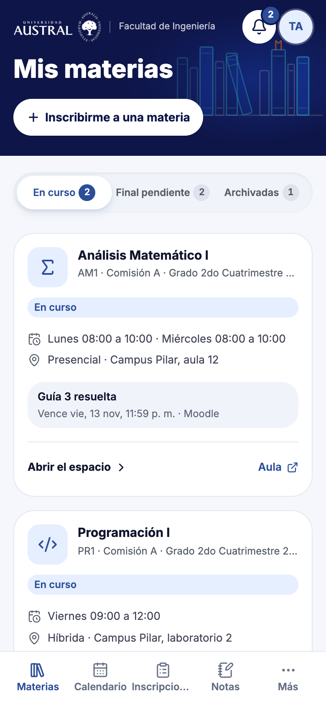
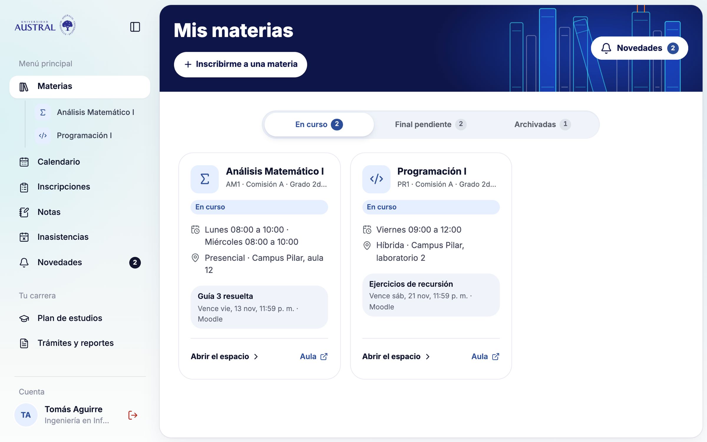
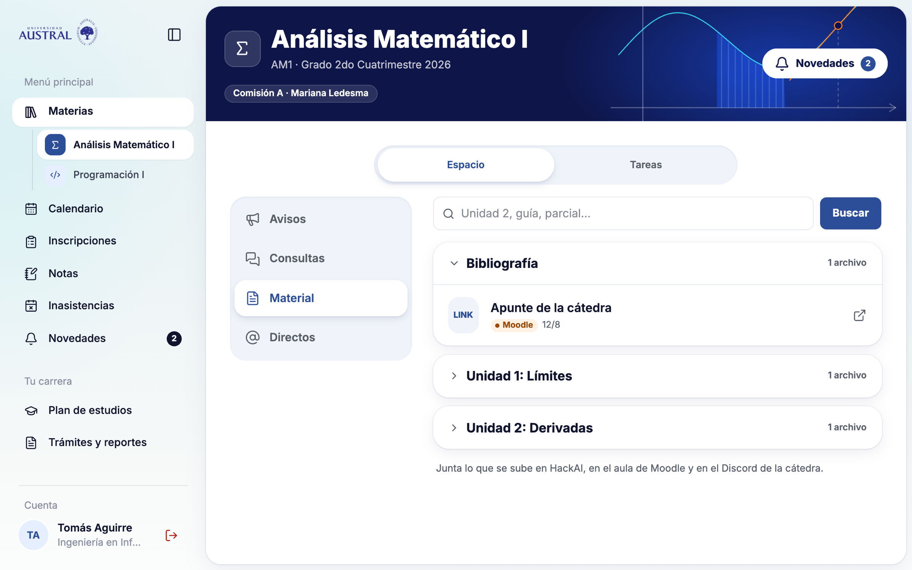
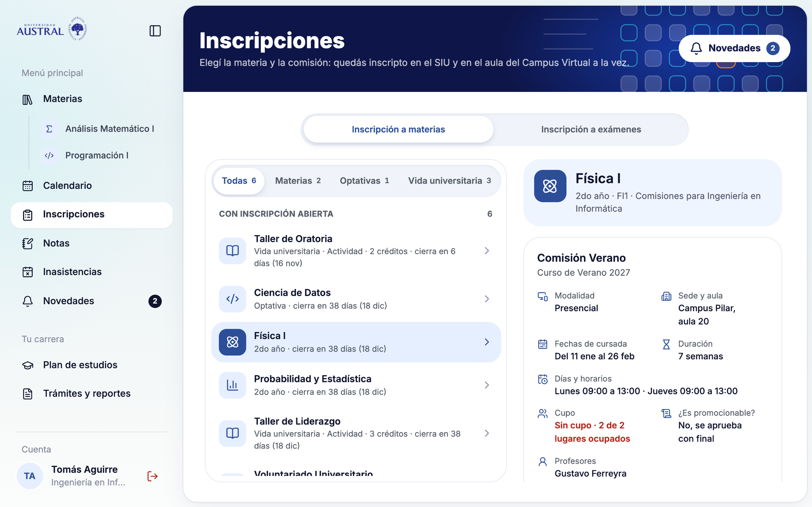
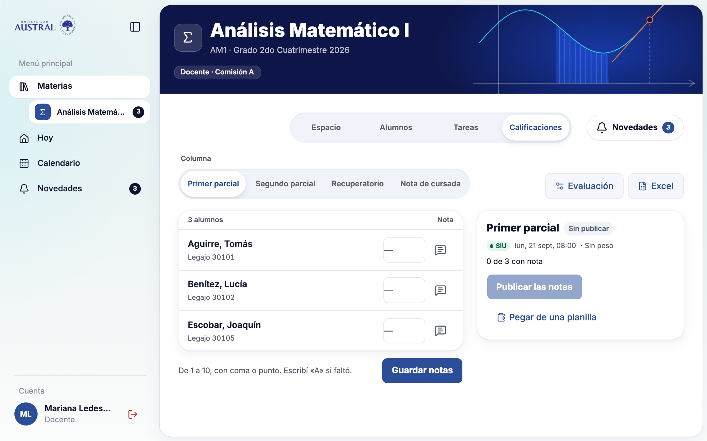
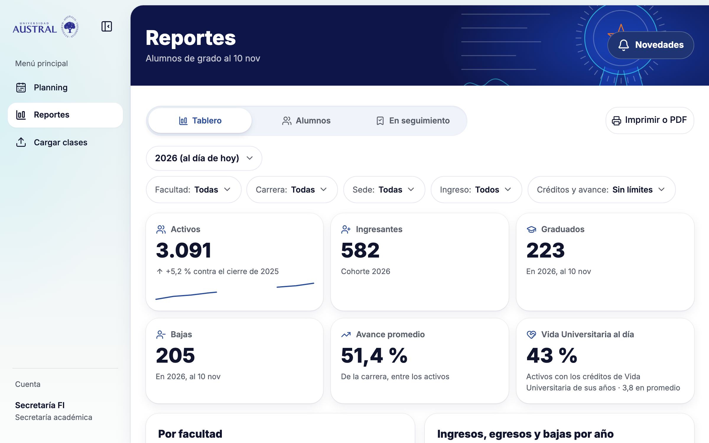

[HackAI 2026 · Universidad Austral]
HackAI
Un solo lugar que te dice qué te tocay te avisa a tiempo.
Facundo Lanusse · Ignacio Gaspar
Marco Schenker · Facundo Pyznar
[Pitch · 13 de noviembre de 2026]

Nota nueva · Análisis Matemático I
Primer parcial
Guía 3 resuelta
Vence vie, 13 nov, 11:59 p. m.
MoodleAnálisis Matemático I
[El problema]
Dos sistemasque no se hablan.
Quien cruza la información es una persona, a mano.
(01)
SIU Guaraní
Lo administrativo: inscripciones, historia académica, plan y constancias.
- Su calendario
- Su bandeja
- Sus notas
(02)
Campus Virtual
Moodle: aulas, material, entregas y avisos de cada materia.
- Su calendario
- Su bandeja
- Sus notas
Único puente entre los dos: el botón «Ir»
Fuente: relevamiento de SIU y Campus, 10/11/2026
[El problema]
Qué les duele
(01) Alumnos · encuesta, n = 39
Cursos viejos mezclados con los actuales
56%Aulas con organización confusa
54%Inscribirse a materias o exámenes en el SIU
54%Se usa mal desde el celular
49%Avisos que no llegan · lo más pedido
44%(02) Docentes y gestión · entrevistas
10 a 15 minutos
para tomar lista, en cada clase.
3 cargas por nota
Moodle, un Excel y el SIU: «en esos pasos hay errores».
80 reportes
para ver un solo indicador de toda la universidad.
Encuesta, n = 39. Entrevistas a 3 docentes, Admisiones y la Dirección de Estudios, 12 y 13/11.
[El usuario]
Para quiénlo construimos
El alumno primero, después el docente. Y un tercero que no teníamos: gestión.
(01) Primero
El alumno de grado
Varias materias, dos sistemas, todo desde el celular.
¿Qué me toca?
¿A qué me puedo anotar?
¿Hay algo nuevo?
(02) Después
El docente
Publicar, tomar lista, corregir y cargar notas una sola vez.
Avisos que llegan
Lista en segundos
Notas sin pasos de más
(03) Secretaría y Dirección de Estudios
Gestión
Asignar aulas y seguir a los alumnos que se están quedando.
¿Cómo vienen?
¿Quién está en riesgo?
¿Qué le falta a este alumno?
[La estrategia]
Sistema propio,apoyado en lo que ya existe
SIU Guaraní
Moodle
Discord
Puertos y adaptadores
Uno por sistema
Núcleo de HackAI
Personas · Cursada · Espacios · Seguimiento · Hoy · Planning
Pantallas
Alumno, docente y secretaría
(01)
Delega lo que ya anda bien
Actas, constancias y la historia oficial siguen en el SIU.
(02)
Resuelve lo que nadie resuelve
Qué me toca, avisos que llegan, lista en segundos y reportes cruzados.
(03)
Aísla cada sistema
Si mañana cambia el SIU, se cambia un adaptador y no la aplicación.
[Antes y después]
Cómo cambia cada trámite
[Trámite]
[Hoy, en SIU y Campus]
[Con HackAI]
Saber qué me toca
3 clicks, en dos sistemas
1 click
Un solo calendario
Enterarme de un aviso
3 clicks, y solo si entrás a mirar
Te llega
Por Discord
Inscribirme
3 clicks; el cupo se ve al final
3 clicks
Con cupo y horario a la vista
Saber qué finales debo
Cruzar dos pantallas a mano
1 click
Con su próxima mesa
[Docente]
Tomar lista
10 a 15 minutos por clase
4 toques
Solo tocás a los ausentes
[Docente]
Cargar las notas
Moodle › Excel › SIU, a mano
Una vez
Y pasan al SIU
[Gestión]
Ver una cohorte
80 reportes para toda la universidad
1 pantalla
Y se exporta
Hoy: línea base del 10/11 y entrevistas.
[La demo]
Ahora, andando
(01)
El alumno
Tomás Aguirre, alumno sintético.
- Mis materias y finales pendientes
- Un aviso que llega, en vivo
- El cambio de aula, en la campana
- Un solo calendario
(02)
El docente
Diego Arrieta, docente sintético.
- Su día en una pantalla
- Tomar lista con toques
- Notas pegadas de una planilla
- Pase de notas al SIU simulado
(03)
Secretaría
Planning de Aulas y Reportes.
- La planilla de aulas y el Planning
- Reportes cruzados
- Del número al alumno
- Seguimiento y exportación
Personas sintéticas. Discord es real; el SIU y el Moodle están simulados con la forma de sus APIs.
[La evidencia]
Qué es realy qué está simulado
La demo corre con personas y datos sintéticos.
(01)
Real
Un bot propio.
Publicada, y se instala en el celular.
Con su cuenta, sin guardar nada.
(02)
Simulado
Con la forma de sus APIs.
Alumnos, docentes, notas y reportes.
Notas, asistencia y la inscripción de la demo.
(03) Depende de la universidad
Pendiente
Con la cuenta Microsoft de la Austral.
API del SIU y servicios web de Moodle.
Con autorización de Gobierno de Datos.
[La evidencia]
Qué medimos
Del problema a lo que mejora HackAI.
(01) El problema
39
alumnos encuestados, de cinco facultades
(02) Docentes y gestión
6
entrevistas a alumnas, docentes y gestión
(03) La línea base
17
tareas medidas en SIU y Campus
(04) Avisar a tiempo
13 s
tarda un aviso en llegar a otra pantalla
(05) Que se pueda usar
3 s
para cambiar de canal; antes, hasta 28 s
Fuentes: encuesta, entrevistas, línea base del 10/11 y mediciones del equipo del 11 al 13/11
[Las iteraciones]
Lo que cambiamos en el camino
(10/11)
La base heredada no compilaba.
Sistema propio, con puertos.
(12/11)
La API del SIU no deja inscribir.
HackAI usa la sesión del propio alumno.
(12/11)
La pantalla Hoy le mostraba demasiado al alumno.
Mis materias pasó a ser el inicio.
(12/11)
Tomar lista lleva de 10 a 15 minutos.
Docentes al alcance: lista con toques.
(13/11)
Entrar a una materia tardaba hasta 17 segundos.
Unos 3 segundos.
(13/11)
Cada nota se carga tres veces; 80 reportes.
Carga única de notas y Reportes.
(13/11)
Con la cuenta real, el aula era la simulada.
El Campus real, en vivo y sin guardarlo.
commits
PRs
issues cerrados
tests automáticos
Del primer commit, el 10/11, a la noche del 13/11
[El próximo paso]
Qué sigue
Primero, un piloto. Después, salir a producción.
(01) Con usuarios
Llevarlo a una cátedra
- Un piloto con una cátedra que ya usa Discord.
- Reportes, con un caso real de la Dirección de Estudios.
(02) Con la universidad
Pasar a producción
- Ingreso con la cuenta Microsoft de la Austral.
- Acceso a las APIs del SIU y de Moodle.
- Acuerdo de datos (Ley 25.326) y Gobierno de Datos.
[Siguiente hipótesis]
HackAI arma el camino más corto para que un alumno se reciba. No está construido.
[HackAI]
Un solo lugarque te dice qué te tocay te avisa a tiempo.
Probalo desde el celular
campus-hackai.vercel.app
[Respaldo · alumno]
Mis materiascomo inicio
(01)
Solo lo que cursás hoy
Las materias viejas quedan archivadas, no mezcladas.
(02)
Lo próximo, en la tarjeta
Horario, aula y la entrega que vence, sin entrar al aula.
(03)
Los finales que debés, aparte
Una pestaña con cada final pendiente y su próxima mesa.

Captura de HackAI con datos sintéticos
[Respaldo · alumno]
El espaciode la materia
(01)
Avisos que llegan
El docente publica una vez y sale también en Discord.
(02)
Se crea solo desde el SIU
Te inscribís y quedás adentro del espacio.
(03)
Material con su origen
En el mismo orden que el aula, y dice de dónde vino.

Captura de HackAI con datos sintéticos
[Respaldo · alumno]
Inscripciónen un paso
(01)
El cupo, antes de elegir
«Sin cupo» se ve en la comisión, no al final.
(02)
Todo para decidir
Horarios, sede, duración y si la materia promociona.
(03)
Un paso para quedar adentro
Quedás inscripto, en el aula y en el espacio.

Datos sintéticos. En la demo, la inscripción va contra el SIU simulado.
[Respaldo · docente]
El ladodel docente
(01)
Su día en una pantalla
Su clase, con Zoom si es virtual, y las consultas sin responder.
(02)
Lista con toques
Todos presentes, y toca a los que faltan.
(03)
Notas una sola vez
Pegadas de una planilla; pasan al SIU, que en la demo es el simulado.

Captura de HackAI con datos sintéticos
[Respaldo · secretaría]
Reportespara gestión
(01)
Ochenta reportes en una pantalla
Cruza facultades, carreras y años de ingreso.
(02)
Del número al alumno
Al listado y a la ficha, sin salir de Reportes.
(03)
Lo que le falta
Se lo sigue y se exporta a un archivo que abre Excel.

Captura de HackAI. Los reportes corren sobre una población sintética.